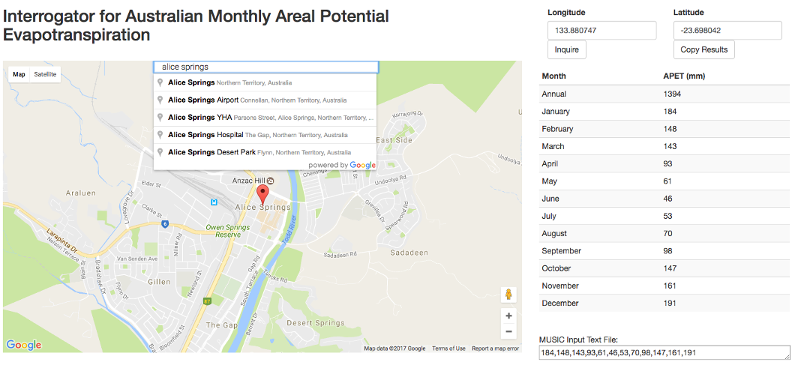
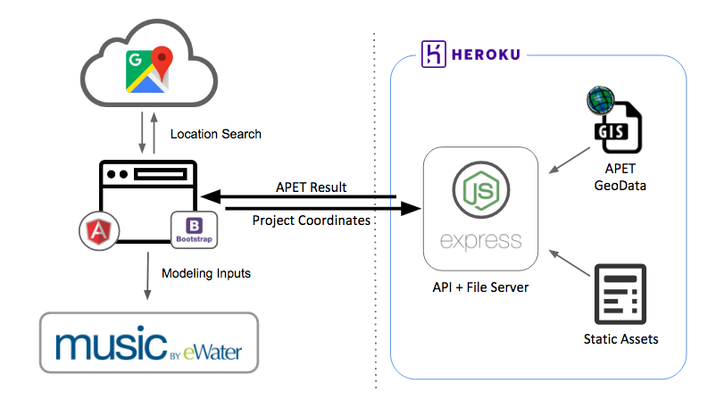

Making it easy for non-GIS savvy engineers to access the data they need for water quality modelling.
Project Code on: GitHub | Live Demo

Motivation
MUSIC is the de-facto software for modeling performance of stormwater quality management systems.
One of the critical input to the model is the monthly evapotranspiration data, which is dependent upon the location of the project site in question. The evapotranspiration GIS data is available publicly from state agencies, but non-GIS savvy engineers often are unable to access it easily.
So I've built a tool to make it easier and faster for engineers to retrieve the evaporation data for their projects.
Architecture

Frontend
The frontend consists of a map based UI that is built with Angular & Bootstrap framework. It utilizes the Google Maps API for location search and coordinate retrival. The coordinates are sent as input arguments to the backend to retrieve the evaporation data for a particular project location.
Backend
The backend consists of a nodeJS + Express server acting as both API & Web Server hosted on Heroku Cloud Platform. The server parses evaporation ArcGrid GIS data on startup and expose the data query service with a RESTful API.
What's next?
As part of the quality assurance process all of the modeling (as well as inputs) must be checked. Right now there's no easy way to do that other than going to compare the values to evaporation contours charts from BOM. The next feature will include positions overlay on these chart so that a PDF report can be generated for QA and filing purposes.